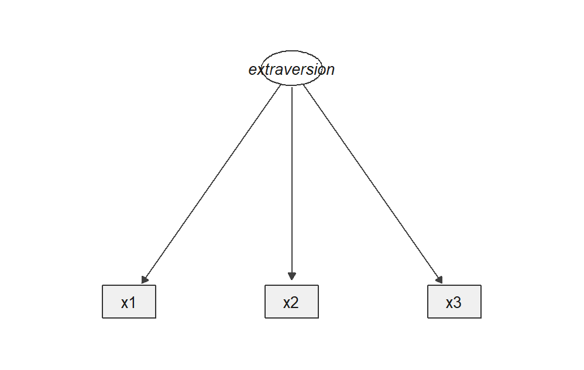
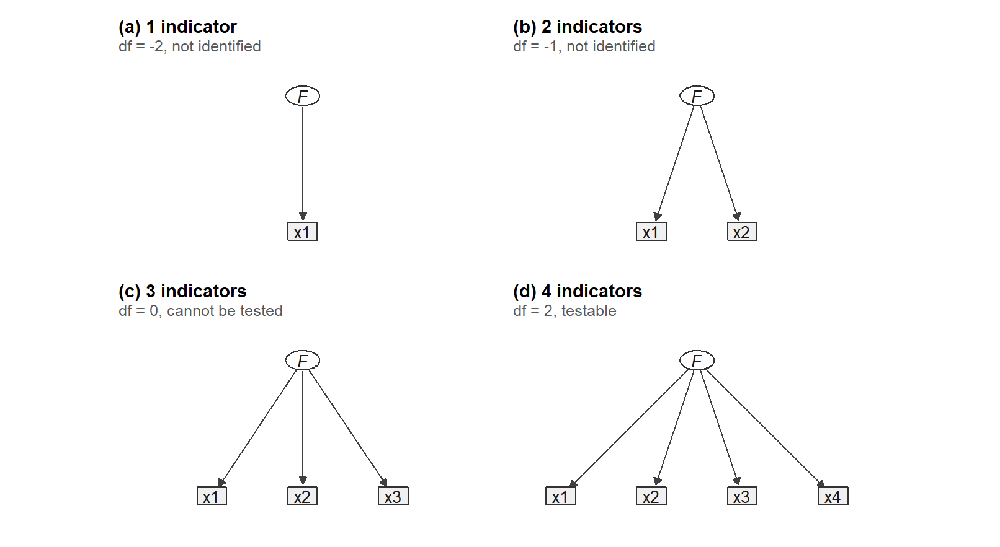
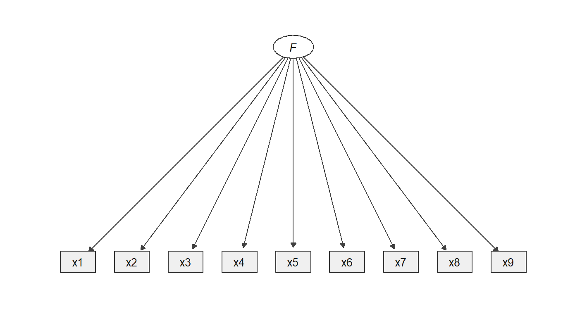
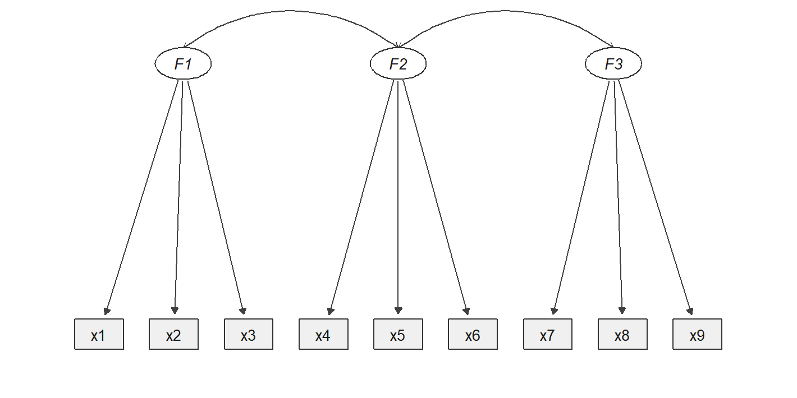
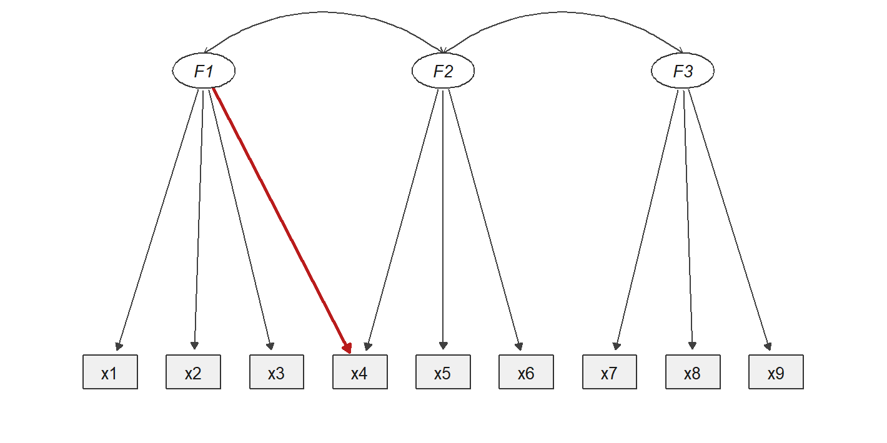
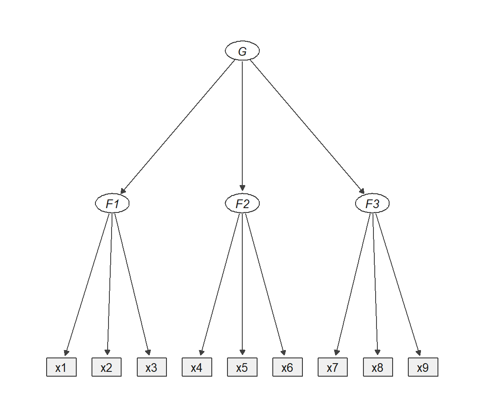
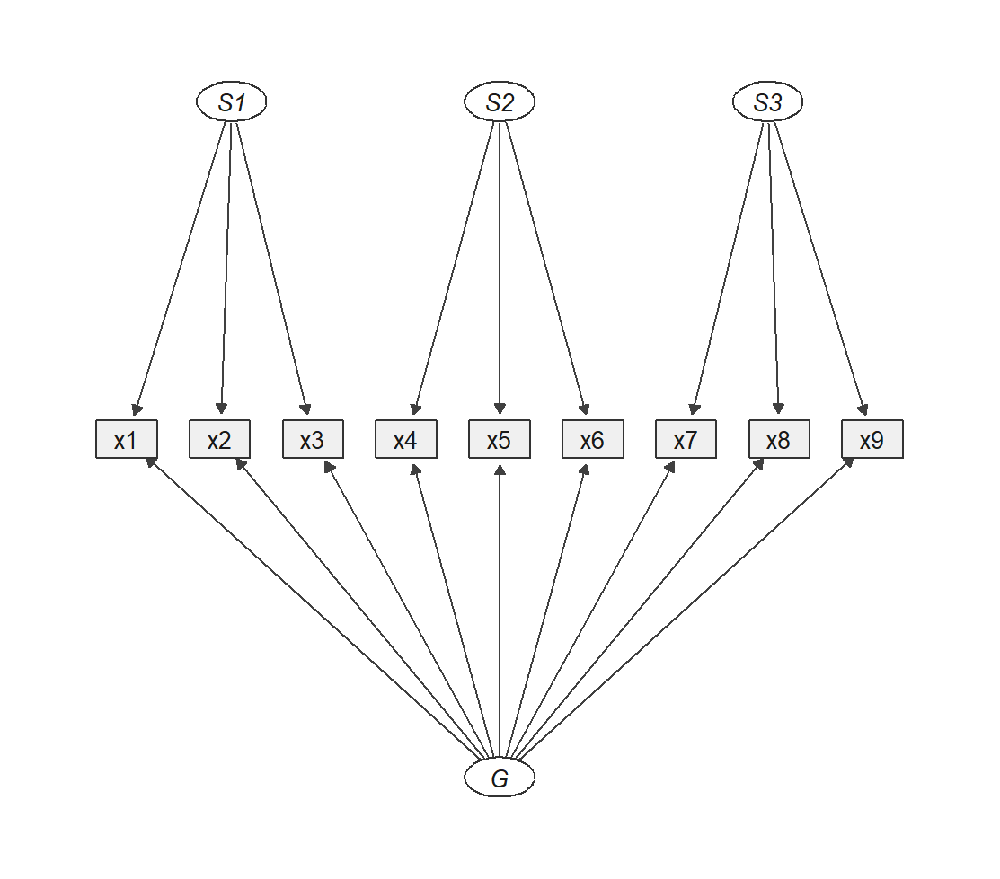
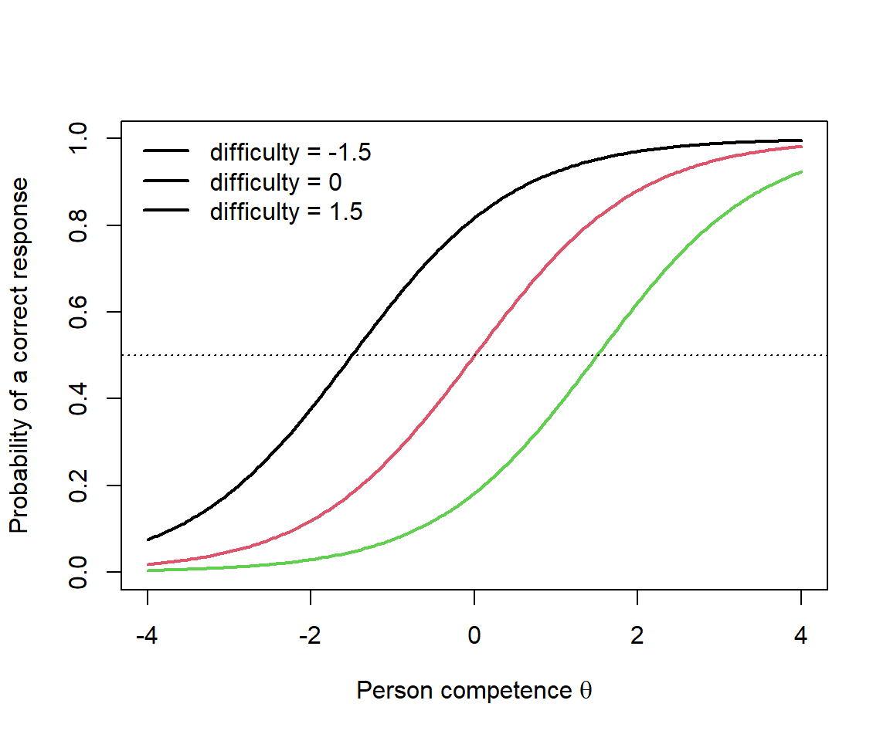

Chapter 14 Reveal
Dimensions, groups, and latent variables
14.1 Components
Principal component analysis
Principal component analysis summarizes many observed variables with a smaller number of weighted combinations. Components are constructed directly from the observed variables. They can be useful for compression, visualization, and prediction, but they do not by themselves posit an unobserved construct that generates the indicators.
This distinction becomes important later: components summarize observed variation; factor models explain shared variation through latent variables.
14.2 Clusters
Cluster analysis
Cluster analysis searches for groups of similar observations. The target is usually a partition of persons, schools, countries, documents, or other units rather than a continuous latent dimension.
A cluster can be interpreted descriptively without claiming that it is a naturally existing type. Later extensions such as latent class and latent profile models make the grouping probabilistic and connect clustering to the wider family of latent-variable models.
14.3 Latent Variables
Constructs, indicators, and measurement models
Some variables are comparatively straightforward to measure. Age can be taken from a register or asked directly. Income and number of children can be reported by respondents or recorded administratively. Their values may be missing, misreported, or defined differently across sources, but the variables are observable in principle.
Other concepts are less tangible and less naturally represented by one value. Happiness, risk attitude, personality, intelligence, and mathematical competence are examples. Yet none of them is automatically latent. Researchers sometimes measure such concepts with one direct question, sometimes with a score built from several items, and sometimes with a latent-variable model.
Every study must therefore make a measurement decision: how should a substantive concept become data? This process is called operationalization. A latent-variable model is one possible answer — an explicit model of how observed indicators relate to an unobserved quantity. It is not the only answer, and it is not automatically the best one.
The rest of this section builds that decision in four steps. First the vocabulary, once and in one place. Then three worked examples that form a ladder: a construct where one item is enough, a construct where several items are averaged, and a construct where a model is unavoidable. Only then the formal model and a map of the wider family.
14.3.1 How a Concept Becomes Data
Suppose you want to study happiness. You cannot put happiness into a regression. You can only put in a column of numbers, so something has to turn the concept into one. That step has a name — operationalization — and it is a decision, made by a researcher, that can be made well or badly.
The most direct route is to ask. A survey question produces a recorded response, and anything recorded in the data is an observed variable, sometimes called manifest. In measurement contexts the same response is also called an indicator, because it is being used as evidence about something rather than as an interesting quantity in its own right. Nothing mysterious has happened yet: a question was asked, an answer was written down.
Now notice what did not enter the data set. Happiness itself is nowhere in the file. Only an answer to a question about it is.
At this point a natural but wrong move is to call happiness unobserved and stop. Consider a genuinely unobserved value instead. A respondent skips the question about age, so that cell is empty. Age is unobserved for that person — and age has not become anything exotic. It is an ordinary variable with a gap, and the appropriate response is a missing-data method. The same goes for omitted variables and regression residuals: unobserved quantities, all of them, and none of them the thing this chapter is about.
The difference is not availability. It is whether a model represents the quantity. A variable is latent when it is not measured directly but is explicitly written into a statistical model, estimated through the indicators that are observed. Happiness is unobserved in the data either way. It becomes latent only when you build a model that contains it.
Which leaves one word for the thing itself, before any of these decisions: the construct — the substantive concept you are trying to study. A construct can be measured with one question, summarized by an average of several, or represented as a latent variable. All three are legitimate, and the choice is yours to justify.
Every latent variable is unobserved, but not every unobserved quantity is latent. Latentness is a modeling role, not a property of a concept.
This is why there is no fixed list of latent constructs. Happiness and personality are the textbook examples, and both are routinely measured with no latent variable anywhere in sight.
14.3.1.1 Reading a Path Diagram
One more convention before the examples, because these models are usually drawn rather than written. Three items measuring extraversion look like this:

Figure 14.1: A latent variable with three indicators. The ellipse is not a column in the data; the rectangles are.
The grammar is small enough to state in full. A rectangle is an observed variable — a column that exists in your data. An ellipse is a latent variable, which is not. A single-headed arrow points from cause to effect; running from a factor to an indicator it is called a loading, written \(\lambda\), and it says how strongly that item responds to the construct. A double-headed arc between two ellipses is a covariance or correlation: the two are related, with no claim about which drives which. Each indicator also carries a small residual arrow, \(\varepsilon\), for the part of it the factor does not explain; these are omitted from most figures in this book to keep them readable.
One habit is worth forming immediately. The absence of an arrow is a claim too. Two factors drawn side by side with no arc between them are being asserted to be uncorrelated, and that assertion can be wrong.
14.3.2 One Item Can Be Enough: Happiness and Risk
Start with the case that measurement textbooks tend to skip.
The European Social Survey asks every respondent, in every round:
Taking all things together, how happy would you say you are? 0 = extremely unhappy … 10 = extremely happy77
The German Socio-Economic Panel asks about life satisfaction in the same format:
How satisfied are you with your life, all things considered? 0 = completely dissatisfied … 10 = completely satisfied78
And the Gallup World Poll — the data source behind the World Happiness Report — uses the Cantril ladder:
Please imagine a ladder with steps numbered from 0 at the bottom to 10 at the top. The top represents the best possible life for you, the bottom the worst possible life. On which step would you say you personally stand at this time?79
Three single questions. Each produces one ordinary observed variable, and between them they support a large share of the empirical well-being literature and an annual international ranking of countries.
The same design appears for risk attitude. The SOEP asks whether respondents are generally willing to take risks or try to avoid them, from 0 to 10.80 At the 2026 SOEP User Conference, Thomas Dohmen gave a keynote titled Twenty-Two Years of the General Risk Question,81 which is the argument in one title: a single, carefully designed question can carry two decades of evidence when its target is clear, its wording is stable, and it is repeated across people, years, and countries.
Why one item is the right choice here. The construct is defined as a global self-assessment, and the question asks for exactly that. The item is not an imperfect proxy for something deeper — it is the outcome of interest. Beyond that, single items are cheap in respondent burden, can be repeated frequently in a broad panel, support comparison over time through stable wording, and can be validated against retests, external outcomes, and behavior.
When one item is not enough. A single response cannot separate the construct from item-specific measurement error, so its reliability cannot be estimated from itself. It cannot reveal whether the concept has several dimensions. And its interpretation depends on wording, response style, and the respondent's reading of the question.
That last limitation is not hypothetical, and the three questions above illustrate it. Happiness asks about affective state, life satisfaction asks for a cognitive judgment, and the Cantril ladder asks for a comparison against an imagined best possible life. They correlate substantially and they are not the same construct. Choosing one of them is a substantive decision, not a formatting detail.
A single item is a measurement model too — one with the loading fixed to one and the residual variance fixed to zero. Those are assumptions, not the absence of assumptions.
14.3.3 Several Items, One Score: The Big Five
Some constructs resist a single question because they are defined as broad domains.
Before the example, three instrument terms. An item is one question, statement, or task. A scale combines related items intended to measure one dimension, and a subscale is one scale inside a larger instrument. An inventory is a larger collection of items and scales describing several dimensions or facets. The usage is not perfectly rigid, but a practical distinction holds:
A scale usually produces one main score; an inventory produces a profile of several scores.
Personality shows why one item will not do. The Five-Factor Model distinguishes openness, conscientiousness, extraversion, agreeableness, and neuroticism. Each dimension is broader than any one statement: extraversion alone spans sociability, talkativeness, assertiveness, activity, and positive emotionality. Asking How extraverted are you? would collapse a facet structure that decades of psychological research established.
The NEO PI-3 takes that structure seriously. It contains 240 items and measures the five broad domains together with narrower facets underneath each.82 That number is worth pausing on: it is what a research programme looks like when it treats content coverage as the priority and can afford the testing time.
A general-purpose panel study faces the opposite constraint. The SOEP must also collect work, income, education, family, health, and housing information in the same interview. It therefore uses a short Big Five instrument with 15 items — three per dimension.83 This is not the NEO inventory mechanically truncated; it is a survey measure designed for a different purpose.
| NEO PI-3 | SOEP BFI-S | |
|---|---|---|
| Items | 240 | 15 |
| Resolution | five domains plus facets | five domains only |
| Cost | substantial testing time | a few minutes |
| Typical use | assessment, personality research | population panel, broad models |
Fewer items mean less information and less precision per dimension. That is a trade-off to state, not a flaw to hide.
The usual analysis reverse-codes items pointing in the opposite direction and averages within a dimension. For three extraversion items:
\[ \text{Extraversion score}_p = \frac{x_{p1}+x_{p2}+x_{p3}^{\mathrm{reversed}}}{3}. \]
The result is an observed scale score: simple, transparent, and directly usable as a predictor or outcome. For many research questions it is entirely sufficient.
The same three responses could instead be treated as indicators of a latent extraversion factor. The difference is conceptual, not computational:
\[ \text{items}\longrightarrow\text{fixed average} \qquad\text{versus}\qquad \text{items}\longrightarrow\text{estimated latent factor}. \]
A fixed average assigns every item the same predetermined weight and treats the result as observed. A latent model estimates how strongly each item relates to the common factor and separates shared from item-specific variation.
More items make latent modeling possible; they do not make it mandatory. The inventory is the instrument. A scale score or a latent factor is an analytical representation built from it.
14.3.4 When a Model Is Necessary: Competence and Intelligence
The third rung is where the alternatives run out.
Asking How intelligent are you? measures self-assessed intelligence — a real and interesting variable, but not intelligence. Asking How good are you at mathematics? measures perceived competence, which reflects skill but also confidence, prior feedback, social comparison, and response style. No wording repair fixes this, because the construct is defined by performance and the question collects a judgment.
So switch to performance. One mathematics task records what a person actually did — but it still provides little evidence. A correct answer may reflect competence, a lucky guess, or prior familiarity with that specific problem. An incorrect answer may reflect lower competence, carelessness, a misreading, time pressure, or one unsuitable task.
This is why PISA, VERA, school and university examinations, and multi-stage assessment centres all take hours rather than minutes:
\[ \text{many tasks} \longrightarrow \text{response pattern} \longrightarrow \text{estimated competence}. \]
Four reasons make the length necessary:
- Content coverage — tasks sample different parts of the intended domain.
- Precision — isolated guesses, slips, and task-specific effects lose influence.
- Range — tasks of varying difficulty inform about people at different competence levels.
- Comparability — a measurement model places persons and tasks on one common scale.
In PISA 2022, the cognitive assessment lasted two hours per student, typically about 60 minutes of mathematics plus 60 minutes in another domain. The international item pool was far larger, so different students completed different but overlapping task sets.84 That design buys broad coverage without asking any student to do everything — and it means raw counts of correct answers are not directly comparable across students. Item response theory exists to solve exactly that problem, and returns later in this chapter.
Intelligence testing follows the same logic, and it is where the whole method began. In 1904 Charles Spearman noticed that schoolchildren's marks in unrelated subjects — classics, French, mathematics, pitch discrimination — were all positively correlated. Nobody is good at everything by coincidence. Spearman proposed that one common cause, which he called general intelligence or g, accounted for the shared part, while each subject retained its own specific ability. To argue this, he had to invent factor analysis.
That pattern of uniformly positive correlations among cognitive tests is still called the positive manifold, and it remains one of the most replicated findings in psychology. What it does not settle is what \(g\) is. A single common factor is one explanation for a positive manifold; several correlated abilities are another; mutual reinforcement between abilities during development is a third. The statistical model is compatible with all three.
Even in this best case, then, the factor is not identical to the full theoretical concept. It is a model-based representation supported by one particular set of indicators — which is why the arrangement of the latent variables is itself a substantive claim, and the subject of the next section.
Single items, composite scores, and latent variables are alternative representations, not a hierarchy from inferior to superior.
The right choice depends on the construct, the research question, the precision required, the available survey or testing time, and the assumptions the researcher is willing to defend.
14.3.5 How Many Latent Variables?
Two questions arise once the notation is in place. How few indicators can a factor survive on, and how are several factors arranged relative to one another?
14.3.5.1 The Smallest Possible Factor Model
Start at the bottom. What does one factor with a single indicator look like?

Figure 14.2: Growing a one-factor model one indicator at a time. Only the fourth is testable.
It looks perfectly reasonable, and it is useless. To see why, we need to know what the arrow actually stands for.
Write the model for one item:
\[ x_{i} = \nu_i + \lambda_i\,\eta + \varepsilon_i . \]
This is a regression — with one unusual feature: the predictor is not in your data. Everything else is familiar. \(\nu_i\) is an intercept. \(\lambda_i\), the loading, is a slope: how many points item \(i\) moves when the construct moves by one unit. And \(\varepsilon_i\) is a residual in exactly the ordinary sense — the part of the item the construct fails to account for, containing measurement error and whatever else is specific to that question.
Three quantities in that equation are unknown and must be estimated:
- the loading \(\lambda_i\) — the strength of the connection between construct and item;
- the factor variance \(\psi = \operatorname{Var}(\eta)\) — how much people differ on the construct. This one is peculiar, because the construct has no natural unit: nothing tells you whether extraversion is measured in points, kilograms, or anything else. So \(\psi\) is normally fixed to 1 by convention, or one loading is fixed to 1, purely to give the factor a scale;
- the residual variance \(\theta_i = \operatorname{Var}(\varepsilon_i)\) — how much of the item is not explained.
Now take variances on both sides of the equation. Because \(\eta\) and \(\varepsilon_i\) are assumed unrelated, the item's variance splits cleanly in two:
\[ \operatorname{Var}(x_i) \;=\; \lambda_i^{2}\,\psi \;+\; \theta_i . \]
That single equation is the whole of factor analysis in miniature: observed variance equals explained variance plus residual variance, exactly as in regression.
And it is also the problem. A model can only be estimated from the variances and covariances your data actually supply — with \(q\) observed variables there are \(q(q+1)/2\) of them. Subtract the free parameters and what is left is the degrees of freedom.
With one indicator the data supply exactly one number: \(\operatorname{Var}(x_1)\). The equation above has three unknowns on the right. One equation, three unknowns, and no sample size on earth will fix it. To make it estimable you must fix the loading to one and the residual variance to zero — at which point the "latent" variable is numerically identical to the item, just drawn as an ellipse. This is precisely the point made in Section 14.3.2: a single item is a measurement model, one whose assumptions are hidden by being invisible.
Two indicators add a covariance, and the covariance is where a common factor first leaves a trace: \(\operatorname{Cov}(x_1,x_2) = \lambda_1\lambda_2\psi\). Two items now supply three numbers — two variances and one covariance — against four unknowns once \(\psi\) is fixed (\(\lambda_1, \lambda_2, \theta_1, \theta_2\)). Still one short. A two-indicator factor becomes estimable only inside a larger model, or by forcing the two loadings to be equal — an assumption theory rarely supports.
Three indicators give six numbers — three variances and three covariances — against six unknowns (\(\lambda_1..\lambda_3, \theta_1..\theta_3\)). Everything is estimable and \(df = 0\): the model reproduces the observed covariances exactly, by construction. It cannot misfit, so its fit tells you nothing. A CFI of 1.000 here is arithmetic, not evidence.
Four indicators give ten numbers for eight unknowns, so \(df = 2\). Only now can the data contradict the model. This is why the rule of thumb says three indicators to estimate and four to test, and why the SOEP's three-item personality scales are perfectly usable as scores but cannot have their one-factor structure tested item by item.
Fixing a parameter is not a neutral technical step — it is the difference between a claim that can fail and one that cannot. A model with \(df = 0\) is a description; a model with \(df > 0\) is a hypothesis.
14.3.5.2 Five Arrangements
With enough indicators, the remaining question is how the latent variables relate to each other. Five arrangements cover most of what you will meet.

Figure 14.3: (a) One common factor: every indicator loads on a single latent variable.

Figure 14.4: (b) Correlated factors: distinct factors, related to one another.

Figure 14.5: (c) A cross-loading: x4 is influenced by F2 as intended, and also by F1.

Figure 14.6: (d) Second-order factor: G reaches the indicators only through F1, F2 and F3.

Figure 14.7: (e) Bifactor model: G loads on every indicator directly. No arcs, so G and each S are uncorrelated.
The letters mark genuinely different roles. F is a common factor for its own indicators, and it carries everything those items share. G is a general factor spanning every indicator in the model. S is a specific factor: what its group of items still shares after G has been accounted for.
So F1 and S1 are not the same object, even when they point at the same three items. In panel (b), F1 is the only common cause of x1–x3. In panel (e), G has already taken the variance common to all nine, and S1 is only what remains within x1–x3 on top of that. A specific factor is a residual common factor — which is why S loadings are usually smaller than the corresponding F loadings, and can even change sign.
In panel (a) the single factor is labelled F because that is its structural role. In intelligence research this same shape is the historical g from Section 14.3.4: the name is substantive, the shape is generic.
Panel (c) shows a cross-loading — a second arrow arriving at one indicator from a factor that is not its own. Here x4 is influenced by F2 as intended and by F1. Nothing about the picture is exotic; the claim is that one item measures two things at once. That happens when item content genuinely spans two domains, when wording is ambiguous, or when too few factors were retained. It is not automatically an error: the conventional model, which fixes every non-target loading to zero, is a strong restriction that item content does not always respect.
Panels (d) and (e) are the pair that gets confused. In the second-order model, G reaches the indicators only through the first-order factors — its job is to explain why F1, F2 and F3 correlate. In the bifactor model, G points at every indicator directly and is mediated by nothing, so each item carries two loadings. Note what is missing from panel (e): there are no arcs among G, S1, S2 and S3. In the standard bifactor specification those factors are constrained orthogonal, and that constraint is what makes "the general part of x1" and "the domain-specific part of x1" separable at all. Drop it and the model usually stops being identified.
A bifactor model also contains many more loadings than the alternatives, so it can fit well for reasons unrelated to being correct — exactly the situation the model-fit chapter of this book is about.
The number and arrangement of latent variables is a substantive hypothesis. Model fit can tell you that an arrangement reproduces the data poorly. It cannot tell you that a well-fitting arrangement is the right explanation.
Section 14.5 returns to these models with specification, identification, and estimation. Here they serve a narrower purpose: to show that "the latent variable" in a path diagram may be one bubble, several side by side, or several stacked in layers.
14.3.6 What a Latent Model Does
For continuous indicators, a basic one-factor measurement model is
\[ x_{pi} = \nu_i + \lambda_i\eta_p + \varepsilon_{pi}, \]
where \(x_{pi}\) is person \(p\)'s response to indicator \(i\); \(\nu_i\) is the indicator's intercept; \(\lambda_i\) its loading on the latent variable; \(\eta_p\) person \(p\)'s latent standing; and \(\varepsilon_{pi}\) indicator-specific residual variation.
The model explains associations among indicators through their shared relation to \(\eta\). It never observes \(\eta\). It proposes that a smaller unobserved structure can account for systematic patterns in observed data:
\[ \text{observed variation} = \text{shared factor variation} + \text{indicator-specific residual variation}. \]
Compared with a fixed average, the model can let indicators contribute unequally, retain residual variation instead of averaging it away, and quantify uncertainty. None of this is automatic. The interpretation depends on which indicators were selected, how the model was specified, and which assumptions connect indicators to the proposed construct.
A latent factor should therefore not be called the true construct, and residual variation should not be dismissed as meaningless noise.
14.3.6.1 Is the Latent Variable Ever Computed?
A natural question at this point is whether the estimation eventually produces a value of \(\eta_p\) for each person — a new column to be added to the data set. It does not.
What the model estimates are the loadings, intercepts, residual variances, and factor variances and covariances. The latent variable itself is integrated out: the entire model is fitted to the covariance matrix of the indicators. The practical demonstration is that a confirmatory factor model can be estimated from a covariance matrix and a sample size alone, with no individual responses at all, and the parameter estimates are identical to those obtained from the raw data. Nothing person-specific enters the estimation.
The circle in the path diagram is therefore exactly what it appears to be: a quantity in the model, not a column in the data.
Factor scores can be predicted afterwards as a separate post-hoc step — lavPredict() in lavaan offers several methods for this. Such scores are estimates with their own uncertainty, and different methods give different values for the same person, so they are not simply "the" latent values. They are not required for anything in this chapter, and structural equation modeling in particular relates latent variables to one another inside the model, without ever scoring a person.
There is one setting where person-level values genuinely are produced, and it is worth naming here because it looks like a contradiction. Large-scale assessments such as PISA do report competence on a scale, and item response theory does place each student on it. Even there, however, a single point estimate is avoided: PISA reports plausible values, several random draws from each student's posterior distribution, precisely because the student's competence remains uncertain after the test. Section 14.7 takes this up.
A latent variable becomes tangible through its loadings and through the covariance pattern it explains — not through a column of person values. Where person values are unavoidable, honest practice reports a distribution rather than a number.
14.3.7 A First Map of Latent-Variable Models
Two questions give a useful first orientation: is the latent variable continuous or categorical, and are the indicators continuous or categorical?
| Continuous indicators | Categorical indicators | |
|---|---|---|
| Continuous latent variable | exploratory and confirmatory factor models | categorical factor models, Rasch models, item response theory |
| Categorical latent variable | latent profile and continuous mixture models | latent class models |
The map is an orientation, not a taxonomy. Indicators may be ordinal, binary, counts, continuous, or mixed; models can combine continuous factors with latent classes, add repeated measurements or multiple levels, and use response distributions that fit no cell cleanly.
Structural equation modeling is deliberately absent, because it answers a different question: does the model only describe measurement, or does it also specify regressions and paths among variables?
The following sections follow one branch in depth:
\[ \text{explore a factor structure} \longrightarrow \text{specify and evaluate it} \longrightarrow \text{relate latent variables to other variables}. \]
- Exploratory factor analysis asks what common dimensions may be present.
- Confirmatory factor analysis states and evaluates an explicit measurement model.
- Structural equation modeling adds regressions and paths to measurement models.
- Item response theory focuses on categorical task responses, person competence, and item properties.
Two neighboring methods answer different questions. Principal component analysis builds weighted combinations of observed variables without positing latent causes or measurement error. Cluster analysis groups similar observations rather than measuring a continuous trait.
Latent-variable modeling is not one technique. It is a family of models distinguished by the observed evidence, the type of latent variable, and the relations imposed between them.
14.4 Exploratory Factors
Discovering shared dimensions
Imagine a test with many reasoning tasks or a questionnaire with many personality statements. Some responses move together: people who perform well on one verbal task often perform well on other verbal tasks; respondents who describe themselves as talkative may also describe themselves as sociable and outgoing.
Exploratory factor analysis asks:
Can the relationships among many observed indicators be represented by a smaller number of common dimensions?
The method is exploratory because the complete loading pattern is not fixed in advance. The data help reveal how many factors may be needed and which indicators are most strongly related to them. The result is not a theory-free discovery of hidden truth. Indicator selection, extraction, rotation, and interpretation all involve decisions.
14.4.1 The Common-Factor Idea
For person \(p\), a common-factor model can be written as
\[ \mathbf{x}_p = \boldsymbol{\nu} + \boldsymbol{\Lambda}\boldsymbol{\eta}_p + \boldsymbol{\varepsilon}_p. \]
The observed response vector \(\mathbf{x}_p\) is represented by:
- indicator baselines \(\boldsymbol{\nu}\);
- one or more latent factor values \(\boldsymbol{\eta}_p\);
- factor loadings in \(\boldsymbol{\Lambda}\);
- residual or unique components \(\boldsymbol{\varepsilon}_p\).
A factor loading describes how strongly an indicator is related to a factor within the model. Indicators with similar loading patterns contribute evidence about the same dimension.
The covariance matrix is the empirical starting point. Factor analysis asks whether its pattern can be reproduced approximately by fewer common factors:
\[ \boldsymbol{\Sigma} = \boldsymbol{\Lambda}\boldsymbol{\Phi}\boldsymbol{\Lambda}^{\top} + \boldsymbol{\Theta}. \]
Here, \(\boldsymbol{\Phi}\) contains factor variances and correlations, while \(\boldsymbol{\Theta}\) contains residual variances and any residual relations allowed by the model.
A factor represents shared variation in a statistical model. The covariance matrix alone does not prove that the factor is a causal entity or that it is identical to the complete substantive construct.
14.4.2 Common Variance Is Not Total Variance
Factor analysis differs from principal component analysis in its target.
- PCA constructs components that summarize total observed variance.
- Factor analysis models the covariance attributed to common latent factors and separates it from indicator-specific residual variance.
A component is a weighted combination of the variables. A factor is an unobserved model quantity proposed to account for their shared relationships.
This distinction does not make factor analysis universally superior. PCA may be the better tool when the goal is compression or prediction. Factor analysis is more appropriate when the goal is an explicit measurement interpretation.
14.4.3 The Four Main EFA Decisions
An exploratory analysis requires at least four connected decisions:
- How many factors should be retained?
- How should the factors be extracted?
- How should the solution be rotated?
- How should the resulting factors be interpreted and evaluated?
Treating any one of these decisions as automatic can produce a neat but misleading solution.
14.4.4 How Many Factors?
Retaining too few factors forces distinct dimensions together. Retaining too many can turn sampling noise, wording effects, or small item clusters into apparently meaningful factors.
Useful evidence includes:
- substantive theory: which distinctions should the instrument represent?
- parallel analysis: how many observed eigenvalues exceed those expected from comparable random data?
- scree plot: where does the decline in eigenvalues begin to flatten?
- model adequacy: do residual relationships remain after retaining the factors?
- interpretability and stability: does the solution make sense and recur in new data?
The familiar rule of retaining eigenvalues above one is easy to compute but should not be the sole criterion. Different criteria can disagree because factor retention is an inferential and substantive decision, not a mechanical fact hidden in one number.
The built-in Holzinger--Swineford data contain nine cognitive test variables commonly used to illustrate verbal, visual, and speed-related dimensions. They are convenient for learning, although they are a historical teaching dataset rather than a modern assessment design.
14.4.5 Extracting the Factors
Extraction estimates the common-factor solution. Common choices include:
- minimum residual or minimum-rank approaches, which seek a solution with small residual correlations;
- principal-axis factoring, which focuses on common variance;
- maximum likelihood, which supports likelihood-based tests and intervals under stronger distributional assumptions;
- weighted least-squares approaches, often used with ordinal or categorical indicators.
The best estimator depends on indicator type, distribution, sample size, missing-data treatment, and inferential goals. Extraction should not be confused with rotation: extraction estimates a factor space; rotation chooses an interpretable orientation within it.
14.4.6 Why Rotation Is Necessary
Several loading matrices can reproduce the same covariance structure equally well. Without an additional orientation, the axes are not unique. Rotation chooses a representation intended to be easier to interpret.
- Orthogonal rotation constrains factors to be uncorrelated.
- Oblique rotation allows factors to correlate.
For personality, attitudes, and cognitive abilities, correlated dimensions are often plausible. Oblique rotation is therefore a defensible default unless theory requires independence.
Rotation does not alter which observations were collected, and it does not create better model fit in the ordinary sense. It redistributes loadings across equivalent orientations of the retained factor space.
A visually simple loading table is not proof that the factors are real, distinct, or correctly named. Rotation supports interpretation; it does not replace theory.
14.4.7 Reading a Factor Solution
A useful interpretation considers several pieces together.
14.4.7.1 Primary loadings
A primary loading is an indicator's largest substantive loading. A group of indicators with strong loadings on the same factor may define a common dimension.
14.4.7.2 Cross-loadings
A cross-loading occurs when an indicator is meaningfully related to more than one factor. This may reflect:
- genuinely overlapping content;
- ambiguous wording;
- a broad item spanning several constructs;
- an inadequate number of retained factors;
- a method or response-format effect.
Cross-loadings are not automatically errors. They are evidence that the simple idea of one item measuring one factor may be too restrictive.
14.4.7.3 Communalities and residuals
An indicator's communality is the part of its variance represented by the retained common factors. Low communalities indicate that the factor solution explains little of that indicator. Residual correlations show which relationships remain unexplained.
14.4.8 A Compact EFA Workflow in R
This workflow is deliberately compact. Before substantive use, the researcher must also inspect coding, missing values, reverse-worded items, indicator distributions, sampling design, and the stability of the solution.
14.4.9 What Can Go Wrong?
Common problems include:
- too few indicators: a factor may be weakly defined and unstable;
- highly redundant indicators: apparent strength may come from repeated wording rather than broad construct coverage;
- reverse-worded item factors: wording direction may create a method dimension;
- local dependence: items sharing a text, scenario, or stimulus may correlate beyond the intended construct;
- sample-specific structure: a solution may not transport to another group, language, or period;
- exploration presented as confirmation: a structure discovered and optimized in one sample can fit that same sample unusually well.
A factor solution is therefore a proposal about dimensionality, not the final measurement argument.
14.4.10 From Exploration to Confirmation
EFA asks:
What measurement structure might be present?
CFA asks:
Does an explicitly specified measurement structure provide a defensible account of the observed relationships?
The strongest workflow separates discovery from evaluation. A researcher may explore in one sample and test the resulting structure in another, or use theory and prior evidence to specify the confirmatory model directly.
The transition is not from an inferior method to a superior one. It is a transition from searching for a plausible structure to making the structure explicit and testable.
EFA helps discover a candidate measurement structure. It does not confirm that structure, establish causal factors, or prove construct validity.
14.4.11 Reporting an Exploratory Analysis
A transparent report should describe:
- why the indicators were selected;
- their coding and response scales;
- the sample and missing-data treatment;
- the correlation matrix used, especially for ordinal items;
- the extraction method;
- the evidence used to select the number of factors;
- the rotation method and whether factors were allowed to correlate;
- loadings, communalities, cross-loadings, and factor correlations;
- indicators removed or revised and the substantive reason;
- whether the solution was evaluated in independent data.
14.5 Confirmatory Factors
Specifying and evaluating measurement models
Exploratory factor analysis may suggest a structure. Confirmatory factor analysis turns that suggestion into an explicit measurement claim.
Suppose nine observed tests are intended to measure three abilities: visual processing, textual ability, and speed. A CFA states which indicators measure which factors, which factor correlations are allowed, and which cross-loadings or residual relations are fixed to zero.
CFA therefore asks:
Can a specified measurement model reproduce the observed relationships well enough to support its intended interpretation and use?
The word confirmatory does not mean that the theory will be confirmed automatically. It means that the restrictions are stated before the model is evaluated.
14.5.1 From a Pattern to a Measurement Claim
A one-factor measurement equation is
\[ x_{pi} = \nu_i + \lambda_i\eta_p + \varepsilon_{pi}. \]
The model says that person \(p\)'s response to indicator \(i\) contains:
- an indicator intercept \(\nu_i\);
- a factor contribution \(\lambda_i\eta_p\);
- residual variation \(\varepsilon_{pi}\).
For several indicators and factors, the model-implied covariance matrix is
\[ \boldsymbol{\Sigma}(\boldsymbol{\vartheta}) = \boldsymbol{\Lambda} \boldsymbol{\Phi} \boldsymbol{\Lambda}^{\top} + \boldsymbol{\Theta}. \]
The loading matrix \(\boldsymbol{\Lambda}\) connects indicators to factors. The factor covariance matrix \(\boldsymbol{\Phi}\) describes variation and relationships among factors. The residual covariance matrix \(\boldsymbol{\Theta}\) describes indicator variation not represented by the factors.
Estimation chooses parameters \(\boldsymbol{\vartheta}\) so that the model-implied covariance matrix resembles the observed covariance matrix \(\mathbf{S}\).
14.5.2 Fixed and Free Parameters
A CFA is defined as much by what it excludes as by what it estimates.
A conventional three-factor model may state that:
- each item loads on one intended factor;
- omitted cross-loadings are fixed to zero;
- the three factors may correlate;
- residual variances are estimated;
- residual correlations are initially fixed to zero.
In lavaan, the measurement model is compact:
The operator =~ means is measured by. With std.lv = TRUE, each latent factor variance is fixed to one to define its scale.
The syntax is short, but the claim is strong: the model assigns measurement roles, excludes many possible relations, and asks whether those restrictions are compatible with the data.
14.5.3 Identification and Scaling
Before asking whether a model fits, we must ask whether its parameters can be estimated uniquely.
Identification asks whether the observed moments determine one unique parameter solution. With \(q\) observed variables, a covariance matrix contains
\[ \frac{q(q+1)}{2} \]
distinct variances and covariances. If the model estimates \(k\) free parameters from \(m\) observed moments, the degrees of freedom are
\[ df=m-k. \]
- \(df<0\): the model is underidentified.
- \(df=0\): the model is just identified and reproduces the observed moments by construction.
- \(df>0\): the model is overidentified and its restrictions can be contradicted by the data.
Counting moments is necessary but not always sufficient; the equations must also contain independent information.
A latent variable has no natural unit. Its scale is commonly defined by:
- fixing one loading to one; or
- fixing the factor variance to one.
This scaling choice defines a unit. It does not mean that the fixed value is known substantively.
A one-factor model with three indicators is often just identified when the factor scale is fixed and residuals are independent. It can estimate the parameters, but global fit cannot test the one-factor restrictions. Four or more indicators usually create degrees of freedom, although identification still depends on the complete specification.
A unique estimate is not the same as a good model. Identification makes evaluation possible; it does not establish validity.
14.5.4 Estimation
The estimator should match the indicators and the analysis.
| Indicators and data | Common approach |
|---|---|
| approximately continuous and reasonably regular | maximum likelihood |
| continuous but non-normal | robust maximum likelihood such as MLR |
| ordered categorical or binary | categorical estimators such as WLSMV, or an appropriate categorical likelihood |
| incomplete continuous data under a defensible missing-at-random assumption | full-information maximum likelihood with an ML-based estimator |
Treating a few ordered categories as continuous may or may not be reasonable. The consequences depend on the number of categories, response distributions, sample size, and model. The decision should be reported rather than hidden behind software defaults.
Robust estimation changes standard errors and test statistics to better accommodate violations such as non-normality. It does not repair a substantively misspecified measurement model.
14.5.5 Reading the Parameters
A standardized loading indicates how strongly an indicator is represented by a factor in the specified model. In a simple standardized one-factor model, a loading of \(0.70\) implies
\[ 0.70^2=0.49, \]
so about 49% of the indicator variance is represented by the factor. The interpretation becomes less direct when indicators have several loadings, residual correlations, or other predictors.
Important parameters include:
- factor loadings: how indicators relate to factors;
- factor correlations: how latent dimensions relate to one another;
- residual variances: how much indicator variation remains;
- intercepts or thresholds: where indicators are located on their response scales;
- latent means and variances: how factors are distributed when the model identifies them.
Large loadings do not by themselves prove good content coverage. A factor measured by several nearly identical questions can look statistically strong while representing only a narrow part of the intended construct.
14.5.6 Common Confirmatory Factor Models
Several familiar models are different explanations of the same observed covariance structure. They are not interchangeable ways to improve fit.
14.5.6.1 One common factor
All indicators load on one factor:
\[ x_i=\nu_i+\lambda_i\eta+\varepsilon_i. \]
This model is plausible when one broad dimension is expected to account for the shared variation.
14.5.6.3 Second-order factor
A second-order model explains correlations among first-order factors through a broader factor:
\[ \boldsymbol{\eta} = \boldsymbol{\Gamma}G + \boldsymbol{\zeta}. \]
Items load on first-order factors, and the first-order factors load on the general factor \(G\). The general factor influences the indicators indirectly through the domain factors.
General factor
↓
First-order factors
↓
Observed indicatorsThis model is appropriate only when the correlations among the first-order factors support a meaningful higher-order interpretation.
14.5.6.4 Bifactor model
In a bifactor model, each indicator loads directly on:
- one general factor;
- one specific factor.
General factor ─────────────→ all indicators
Specific factor 1 ─────────→ its indicator group
Specific factor 2 ─────────→ its indicator groupThe general factor represents variation common across all indicators. Specific factors represent remaining common variation within domains after the general factor is taken into account.
A bifactor model can fit flexibly because it contains many loadings. Better fit does not automatically justify reporting one general score. The general and specific factors must be stable, interpretable, and supported by the indicator design.
Second-order and bifactor models are advanced confirmatory factor models. They are not a middle category between CFA and SEM, and they should not be selected only because a simpler model fits poorly.
14.5.6.5 Cross-loadings
An indicator may genuinely reflect more than one factor:
\[ x_i = \lambda_{i1}\eta_1 + \lambda_{i2}\eta_2 + \varepsilon_i. \]
A cross-loading can be theoretically appropriate when item content spans dimensions. Fixing every non-target loading to zero may be too rigid.
14.5.6.7 Method and response-style factors
A separate factor can represent systematic response behavior rather than the target construct, such as acquiescence or common wording direction. Such factors can be useful, but they require item designs that identify the method effect separately from the substantive factors.
14.5.7 Evaluating a Confirmatory Model
Day 3 of the course begins after the model has been estimated. The output is on screen, and the uncomfortable question is:
Is this model good enough, and what does good enough mean?
A defensible evaluation follows a sequence rather than one cutoff.
14.5.7.1 Step 1: Did the model converge?
Check whether the optimizer reached a solution and whether warnings occurred. Non-convergence can result from poor starting values, an underidentified model, extreme correlations, sparse categories, or an implausible specification.
A non-converged solution should not be interpreted as an ordinary fitted model.
14.5.7.2 Step 2: Are the estimates admissible and plausible?
Inspect:
- negative residual variances;
- factor correlations outside the admissible range or extremely close to one;
- implausibly large standard errors;
- unstable or weak loadings;
- thresholds or variances inconsistent with the data;
- estimates driven by miscoding or reversed items.
A model can display attractive global fit indices and still contain inadmissible or substantively implausible parameters.
14.5.7.3 Step 3: How well does the model reproduce the data globally?
Common global diagnostics include:
| Measure | Main question | General direction |
|---|---|---|
| \(\chi^2\) test | Is exact fit tenable? | smaller relative to degrees of freedom; non-significance is favorable but strongly sample-size dependent |
| CFI | How much does the model improve over an independence baseline? | higher |
| TLI | How much improvement remains after a complexity adjustment? | higher |
| RMSEA | How much approximation error is estimated per degree of freedom? | lower; interpret with its confidence interval |
| SRMR | How large are the average standardized residual discrepancies? | lower |
| AIC and BIC | Which candidate balances fit and complexity better? | lower, only for comparable candidate models |
Historically influential orientation points include CFI and TLI near or above .95, RMSEA near or below .06, and SRMR near or below .08. These values are not laws. Their behavior depends on sample size, model size, factor loadings, estimator, distributions, and the type of misspecification.
The chi-square test asks about exact fit. With large samples, small discrepancies can become statistically detectable. Approximate fit indices answer different questions, but none identifies the substantive source of misfit.
The RMSEA confidence interval is often more informative than the point estimate alone. A wide interval indicates uncertainty; an interval concentrated at high values provides stronger evidence of approximation error.
A fit index is evidence, not a verdict. CFI = .93 does not mean that 93% of the model is correct, and RMSEA = .05 does not prove construct validity.
14.5.7.4 Step 4: Where does the model misfit locally?
Global indices summarize discrepancies. Local diagnostics indicate where they occur:
- residual covariance or correlation matrices;
- standardized residuals;
- modification indices;
- expected parameter changes;
- unusual loadings and residual variances;
- item-level response patterns.
A modification index approximates how much the chi-square statistic might decline if one fixed parameter were freed. It does not establish that the parameter is theoretically correct.
An expected parameter change estimates the likely magnitude of the freed parameter. Ranking modification indices without examining magnitude and item content encourages accidental overfitting.
14.5.7.5 Step 5: Revise, compare, or reject?
Poor fit can point to different problems:
| Possible source | Possible response |
|---|---|
| one item spans two constructs | consider a justified cross-loading or revise the item |
| two items share wording or a stimulus | model the method relation or improve the instrument |
| proposed factors are not distinguishable | reconsider the number or meaning of factors |
| an important dimension is missing | specify and test an additional factor |
| reversed items behave differently | inspect coding, wording, and response styles |
| repeated modifications only work in one sample | validate in new data |
| a simple observed score serves the purpose | reconsider whether a latent model is necessary |
Researchers should distinguish revising the statistical model, revising the measurement instrument, and revising the substantive theory. These are not the same response.
14.5.7.6 Step 6: Validate beyond the original fit
A model repeatedly modified in one sample may describe that sample unusually well. Stronger evidence comes from:
- testing the structure in a new sample;
- separating exploration and validation;
- examining stability across groups or time;
- testing measurement invariance;
- relating the construct to external variables;
- checking robustness to reasonable coding and estimator choices.
Global fit is only one part of validity. A factor can fit statistically while omitting important content, and a useful measure can fail an unnecessarily rigid model.
14.5.8 Beyond Universal Cutoffs
The course introduced two newer approaches. They are useful because they make the limitations of universal thresholds visible, but they should be treated as advanced tools rather than automatic replacements for the full evaluation sequence.
14.5.8.1 Dynamic fit-index cutoffs
Dynamic approaches derive reference values for the particular model under study.85
The general idea is:
- estimate the proposed model;
- simulate data under correctly specified and deliberately misspecified conditions;
- fit the proposed model to the simulated datasets;
- examine how CFI, RMSEA, and SRMR behave;
- derive model-specific decision regions.
The benefit is calibration to features such as model size, loading strength, and sample size. The cost is a new layer of assumptions: the answer depends on which misspecifications are simulated, how large they are, and which error rates matter.
Dynamic cutoffs are therefore best viewed as a sensitivity analysis. They do not replace parameter inspection, local diagnostics, or substantive reasoning.
14.5.8.2 Machine-learning-based diagnosis
A different innovation uses models trained on many simulated factor models. Instead of comparing one fit index with one threshold, the classifier combines features of the estimated model and predicts whether particular types of misspecification may be present.
This approach can potentially distinguish patterns that a single CFI or RMSEA value cannot. It is closer to a diagnostic aid than to a new universal cutoff.
Its validity is bounded by the training simulations. More computing power cannot compensate for missing or unrealistic training conditions. A classifier should therefore generate hypotheses for inspection, not replace theory or item-level diagnosis.
Course lesson: two models can display nearly the same global fit index and still require different conclusions. The numerical value summarizes discrepancy; it does not diagnose its source.
14.5.9 A Compact CFA Workflow in R
The code is intentionally portable and uses data included with lavaan. A complete analysis also requires careful item coding, missing-data decisions, distribution checks, estimator justification, and validation.
14.5.10 What Should Be Reported?
A transparent report should describe:
- the construct and indicators;
- the theoretical reason for the factor structure;
- item coding, including reversed items;
- sample size and missing-data treatment;
- estimator and software;
- identification and scaling;
- loadings, factor correlations, and residual variances;
- chi-square, degrees of freedom, CFI, TLI, RMSEA with interval, and SRMR;
- local diagnostics and every model modification;
- alternative models and validation analyses where relevant.
The conclusion should combine statistical and substantive evidence. The goal is not to make every diagnostic green. It is to construct a measurement argument whose assumptions, evidence, limitations, and intended use are clear.
14.5.11 From Measurement to Structure
CFA specifies how latent constructs are measured. The next step asks how those constructs relate to one another and to observed variables.
In a broad technical sense, CFA belongs to the structural-equation-model family. In the narrower teaching sequence used here:
\[ \text{CFA} = \text{measurement model}, \]
while
\[ \text{SEM} = \text{measurement model} + \text{structural regressions and paths}. \]
This transition is more than a change of software syntax. It moves from evaluating a measurement claim to studying a system of relationships while retaining the measurement model.
14.6 Structural Equations
Linking measurement and relationships
Confirmatory factor analysis asks how constructs are measured. Structural equation modeling adds another layer:
How are the measured constructs and observed variables related?
In a broad statistical usage, CFA is already part of the SEM family. In the narrower teaching usage adopted here, SEM refers to models that combine a measurement model with directed regressions or paths.
14.6.1 Path Models as Systems of Regressions
A path model contains several linked regression equations. For a simple mediation model:
\[ M = \alpha_M + aX + \varepsilon_M, \]
\[ Y = \alpha_Y + c'X + bM + \varepsilon_Y. \]
The indirect effect is \(ab\), the direct effect is \(c'\), and the total effect is
\[ c=c'+ab. \]
When all variables are observed, this is usually called path analysis. SEM can replace some observed variables with latent factors measured by several indicators.
14.6.2 Measurement Model Plus Structural Model
A measurement model describes the indicators:
\[ \mathbf{x} = \boldsymbol{\nu} + \boldsymbol{\Lambda}\boldsymbol{\eta} + \boldsymbol{\varepsilon}. \]
A structural model describes relationships among latent and observed variables:
\[ \boldsymbol{\eta} = \boldsymbol{\alpha} + \mathbf{B}\boldsymbol{\eta} + \boldsymbol{\Gamma}\mathbf{x} + \boldsymbol{\zeta}. \]
The central advantage is that relationships can be estimated while the measurement model remains explicit. A latent predictor is not treated as a perfectly observed scale score, and a latent outcome retains its measurement uncertainty within the joint model.
14.6.3 A Simple Latent Mediation Model
Suppose motivation is proposed to mediate the relationship between educational resources and competence. Motivation and competence may each be measured by several indicators.
The model contains two claims:
- the indicators measure motivation and competence adequately;
- the structural paths among resources, motivation, and competence are substantively defensible.
A compact lavaan skeleton is:
The defined indirect effect is a model parameter. Its causal interpretation requires much more than statistical significance.
14.6.4 Measurement Comes First
A structural model does not rescue a weak measurement model. If indicators do not support the intended factors, the interpretation of regressions among those factors becomes unclear.
A defensible sequence is:
- define the constructs and indicators;
- evaluate the measurement models;
- establish sufficient comparability when groups or time points are compared;
- specify the structural relations;
- evaluate global and local fit of the combined model;
- examine alternative explanations and robustness.
The measurement and structural parts are estimated together in the final SEM, but they should remain conceptually distinguishable.
14.6.5 SEM Is Not Automatically Causal
A directed arrow expresses a model assumption. It does not create temporal order, random assignment, or control for confounding.
A causal interpretation requires evidence and assumptions about:
- temporal ordering;
- omitted common causes;
- selection and missingness;
- measurement validity;
- functional form;
- interference and treatment definition where relevant.
Different directed models can sometimes imply the same covariance structure. Good fit therefore does not prove the direction of causation.
A well-fitting SEM is a well-fitting system of statistical restrictions. It becomes a causal model only when the research design and causal assumptions justify that interpretation.
14.6.6 Where Higher-Order and Bifactor Models Belong
Second-order and bifactor models remain confirmatory measurement models in the organization of this book.
- A second-order model explains relationships among first-order factors with a broader factor.
- A bifactor model gives indicators direct loadings on a general factor and specific factors.
- A structural model adds regressions among constructs or between constructs and external variables.
All can be estimated in SEM software, but they answer different substantive questions. Software membership should not replace conceptual classification.
14.6.7 Model Fit Continues, but the Questions Multiply
The same evaluation principles continue:
- convergence and admissible estimates;
- global and local fit;
- comparison of defensible alternatives;
- validation beyond the original sample.
The structural part adds further questions:
- Are the path directions theoretically justified?
- Are indirect effects meaningful and sufficiently precise?
- Are important confounders omitted?
- Are coefficients stable across groups or time?
- Would another plausible model imply similar observed relationships?
14.6.8 What This Section Will Add Later
The current section establishes the bridge from CFA to SEM. Later development can add:
- observed path analysis;
- latent mediation and moderation;
- longitudinal and cross-lagged models;
- latent growth models;
- measurement invariance before mean comparisons;
- model comparison and equivalent models;
- connections to causal graphs and identification.
SEM extends regression by allowing several equations to be estimated together and extends CFA by placing measured latent constructs inside those equations.
14.7 Items
Item response theory
Factor analysis begins with several indicators and asks what latent variable could explain why they covary. Item response theory turns the same measurement problem around and looks directly at each response:
How likely is a person with a particular level of competence to solve this particular item?
This shift makes persons and items equally visible. A response can be unlikely because the person has less of the relevant competence, because the item is difficult, or because the model does not adequately describe the response process.
14.7.1 Where IRT Sits among Latent Variable Models
A useful first map distinguishes the measurement level of the observed indicators from the form of the latent variable.
| Observed indicators | Continuous latent variable | Categorical latent variable |
|---|---|---|
| Continuous | factor analysis | latent profile analysis |
| Categorical | item response theory / categorical factor analysis | latent class analysis |
Item response theory is therefore not one isolated model in one cell. It is the main family of latent-trait models for categorical item responses. Categorical confirmatory factor analysis occupies much of the same mathematical territory, but uses the language of loadings and thresholds rather than item discrimination and difficulty.
The table is a map, not an exhaustive classification. Models may contain several continuous and categorical latent variables, mixed item types, repeated measurements, multilevel structures, testlets, response times, or latent classes of response processes.
IRT is best understood as a family of measurement models. The Rasch model is one especially important member of that family.
14.7.2 Persons and Items on a Common Scale
For a binary item, the Rasch model is
\[ P(X_{pi}=1\mid\theta_p,b_i) = \frac{\exp(\theta_p-b_i)} {1+\exp(\theta_p-b_i)}, \]
where:
- \(X_{pi}=1\) means that person \(p\) solved item \(i\);
- \(\theta_p\) is the person's latent competence;
- \(b_i\) is the item's difficulty.
The same relationship can be written on the log-odds scale:
\[ \operatorname{logit}\{P(X_{pi}=1)\} = \theta_p-b_i. \]
This simple difference has an unusually clear interpretation:
- if \(\theta_p=b_i\), the predicted probability is \(.50\);
- if the person is one logit above the item, it is about \(.73\);
- if the person is one logit below the item, it is about \(.27\).
A higher value means more competence for persons and more difficulty for items. Persons and items can therefore be placed on one common latent scale.
theta <- seq(-4, 4, length.out = 200)
difficulty <- c(-1.5, 0, 1.5)
probability <- sapply(difficulty, function(b) plogis(theta - b))
matplot(
theta,
probability,
type = "l",
lty = 1,
lwd = 2,
xlab = expression("Person competence " * theta),
ylab = "Probability of a correct response",
ylim = c(0, 1)
)
abline(h = 0.5, lty = 3)
legend(
"topleft",
legend = paste("difficulty =", difficulty),
lty = 1,
lwd = 2,
bty = "n"
)
Figure 14.8: Three Rasch item characteristic curves. The item is solved with probability .50 where person competence equals item difficulty.
14.7.3 Why Begin with Rasch?
The Rasch model is attractive because it is small, interpretable, and demanding.
Its defining restrictions are:
- every item has its own difficulty \(b_i\);
- all items discriminate equally strongly;
- there is no item-specific guessing parameter;
- after conditioning on competence, responses are locally independent.
These restrictions produce several useful consequences.
14.7.3.1 One additive comparison
The response probability depends only on \(\theta_p-b_i\). A difference of one logit has the same meaning throughout the scale.
14.7.3.2 A raw score can be sufficient
For a complete response vector to the same set of binary Rasch items, the number correct is a sufficient statistic for the person parameter. Two pupils with the same raw score receive the same Rasch point estimate, even if they solved different items.
This result no longer holds so simply when pupils receive different item sets, responses are missing, items receive different discrimination parameters, or the model includes further dimensions.
14.7.3.3 Item and person comparisons can be separated
Under model fit, comparisons among persons do not depend on the particular items used, and comparisons among items do not depend on the particular persons sampled, apart from the uncertainty introduced by finite data. This property is often called specific objectivity.
14.7.3.4 The model can be tested rather than merely fitted
Rasch measurement treats equal discrimination and invariance as substantive requirements. If an item does not behave accordingly, the first question is whether the item, scoring, dimensionality, or population violates the intended measurement model—not merely whether another model has a better information criterion.
This is also the limitation. The Rasch model may be too restrictive. A two-parameter model may describe the data better when some items distinguish much more sharply between lower- and higher-competence pupils than others.
14.7.4 IRT Is a Family of Models
Different item formats and response processes require different response functions.
| Situation | Common model | What varies by item? |
|---|---|---|
| Correct / incorrect | Rasch model | difficulty |
| Correct / incorrect | 1PL model | difficulty; one common discrimination may be estimated |
| Correct / incorrect | 2PL model | difficulty and discrimination |
| Multiple choice with lower asymptote | 3PL model | difficulty, discrimination, guessing |
| Ordered partial-credit categories | partial credit model | step difficulties |
| Same rating categories across items | rating scale model | item location, with shared category-step structure |
| Ordered categories with varying discrimination | generalized partial credit or graded response model | thresholds and discrimination |
| Unordered response categories | nominal response model | category-specific response parameters |
| Several competencies | multidimensional IRT | item relations to several latent traits |
| Items nested in common texts or stimuli | testlet model | general competence plus local testlet effects |
The labels Rasch and 1PL are sometimes used interchangeably. Conceptually, both impose equal item discrimination. Software may distinguish them through scale identification: for example, mirt fixes Rasch slopes to one and estimates the latent variance, whereas its 1PL option handles the scale differently. After an appropriate rescaling, the substantive one-parameter response model is the same.
14.7.5 Models within the Rasch Family
The binary Rasch model is only the beginning.
14.7.5.1 Dichotomous Rasch model
Each item is scored \(0\) or \(1\). The item has one difficulty parameter.
14.7.5.2 Partial credit model
An item can award ordered scores such as \(0,1,2\). Each transition between adjacent score categories has its own step difficulty. The item may therefore distinguish between no credit, partial credit, and full credit without abandoning Rasch-style equal discrimination.
14.7.5.3 Rating scale model
This is a more restrictive model for repeated rating categories. It assumes that the category-step structure is shared across items, while items differ in overall location.
14.7.5.4 Many-facet Rasch model
Additional facets can enter additively, such as task difficulty, rater severity, occasion, or response mode. This is useful when performance depends not only on a person and an item but also on who scored the response.
14.7.5.5 Multidimensional and explanatory Rasch models
Several latent competencies can be modelled, or item difficulty can be explained by observable item features. The linear logistic test model, for example, decomposes item difficulty into contributions from item characteristics.
These extensions preserve parts of the Rasch logic, but each adds assumptions that need substantive justification.
14.7.6 Three Choices That Are Often Mixed Together
A large-scale assessment involves at least three distinct decisions.
14.7.6.1 1. The response model
This determines how item responses depend on person and item characteristics: Rasch, 2PL, partial credit, graded response, multidimensional IRT, and so forth.
14.7.6.2 2. Estimation of model parameters
This determines how item parameters and population parameters are calibrated.
| Method | Basic idea | Typical role |
|---|---|---|
| Conditional maximum likelihood | Conditions on the Rasch raw score so that person parameters disappear from item calibration | Classical Rasch estimation |
| Marginal maximum likelihood | Integrates over a population distribution of competence | Large-scale assessment and modern IRT software |
| Joint maximum likelihood | Estimates person and item parameters together | Historically important; can be biased with short tests |
| Bayesian estimation | Combines likelihoods with prior distributions and produces posterior distributions | Complex and hierarchical IRT models |
14.7.7 From a Response Pattern to a Person Distribution
After the item model has been calibrated, a pupil's responses produce a likelihood for \(\theta_p\):
\[ L(\theta_p\mid\mathbf x_p,\widehat{\boldsymbol b}) = \prod_i P(X_{pi}=x_{pi}\mid\theta_p,\widehat b_i). \]
Combining this likelihood with a population distribution gives the posterior distribution:
\[ p(\theta_p\mid\mathbf x_p) \propto L(\theta_p\mid\mathbf x_p)\,p(\theta_p). \]
The important object is this whole distribution. A person score is a summary of it—or, in the case of a plausible value, a draw from it.
14.7.8 Person-Score Options
| Result | Definition | Uses a prior? | Main strength | Main caution |
|---|---|---|---|---|
| ML | value maximizing the response likelihood | no | based only on the response pattern and calibrated items | undefined at all-wrong or all-correct extremes in the basic model |
| WLE | bias-adjusted likelihood estimate | no population prior | reduces first-order bias of ML and is often useful for individual point scoring | still a point estimate; uncertainty must be reported separately |
| MAP | mode of the posterior distribution | yes | finite and stable, including near the extremes | shrinks estimates toward the prior distribution |
| EAP | mean of the posterior distribution | yes | minimizes posterior expected squared error and is easy to accompany with a posterior SD | also shrinks; depends on the chosen population model |
| Plausible value | random draw from the posterior distribution | yes | carries uncertainty into population analyses and regressions | not an individual diagnostic score and not meant to be averaged into one “best” score |
14.7.8.1 EAP: the centre of gravity
The expected-a-posteriori estimate is
\[ \widehat\theta_p^{EAP} = E(\theta_p\mid\mathbf x_p). \]
It is the posterior mean. If the posterior is symmetric, EAP and MAP can be almost identical. If it is skewed, they differ.
EAP estimates are stable for short tests and extreme response patterns because the population distribution contributes information. The price is shrinkage: highly unusual estimates are pulled toward the population mean, especially when the pupil answered few items.
14.7.8.2 MAP: the highest point
The maximum-a-posteriori estimate is
\[ \widehat\theta_p^{MAP} = \operatorname*{arg\,max}_{\theta_p} p(\theta_p\mid\mathbf x_p). \]
It is the mode of the posterior distribution. MAP can be easier to compute in high-dimensional models than EAP, because it finds a maximum rather than integrating over a large grid.
14.7.8.3 WLE: a likelihood score with bias correction
The weighted-likelihood estimate modifies maximum likelihood to reduce its small-sample bias. It does not use a population prior in the EAP/MAP sense and therefore usually shrinks less toward the population mean.
WLE is attractive when a single person-level point estimate is required. It should still be accompanied by a conditional standard error, because measurement precision differs across the competence scale.
14.7.8.4 Plausible values: several completed versions of the latent variable
A plausible value is not the posterior mean or mode. It is a random draw:
\[ \theta_p^{(m)} \sim p(\theta_p\mid\mathbf x_p,\mathbf z_p), \]
where \(\mathbf z_p\) may contain background variables used in a latent regression model.
Several plausible values create several completed datasets. A population analysis is run once with each plausible value and the results are combined. This is closely related to multiple imputation.
Plausible values are particularly valuable when the aim is to estimate population means, group differences, correlations, or regression coefficients. They are deliberately unsuitable for ranking individual pupils or reporting one supposedly exact competence value.
EAP, MAP, and WLE answer: “Which single value should summarize this pupil's uncertain competence?” Plausible values answer: “How can later population analyses retain that uncertainty rather than pretending the latent variable was observed?”
14.7.9 Why the Methods Give Different Scores
The differences become largest when:
- the test is short;
- many items are missing;
- the response pattern is all correct or all incorrect;
- the pupil is far from the centre of the item difficulties;
- the posterior distribution is skewed;
- background variables strongly predict the latent trait;
- the item model is multidimensional.
With a long, well-targeted test, the likelihood is concentrated and ML, WLE, MAP, and EAP will often be close. With little information, the scoring rule matters much more.
14.7.10 VERA as an IRT Application
VERA stands for VERgleichsArbeiten. The assessments are administered in Years 3 and 8 and are intended primarily to support school and classroom development. They relate pupils' performance to the national educational standards and their competence-level models. The results are not intended as school rankings and are not graded.
The IQB describes competence as a continuous scale that is divided into a small number of substantively interpreted levels. Item difficulties and pupil competence are located on the same metric; the levels make that otherwise abstract scale interpretable for teaching.
VERA is therefore a particularly clear application of the basic IRT sequence:
\[ \text{educational standards} \longrightarrow \text{items} \longrightarrow \text{IRT scale} \longrightarrow \text{competence levels} \longrightarrow \text{feedback for instruction}. \]
The IQB also notes that a statistical competence value can be returned for an individual pupil when the difficulties of the administered items are known. At the same time, the individual result needs additional diagnostic evidence—such as learning progress and classroom observations—to support conclusions about one child.
A Rasch model is a natural starting point for VERA-style scoring because many responses are coded as correct or incorrect, items are calibrated on a common scale, and comparability is a central goal. It should not be assumed automatically, however. Dimensionality, local dependence, item fit, differential item functioning, and the consequences of different test booklets must be examined.
Research using VERA data has compared Rasch, 1PL, 2PL, and multidimensional models. This is useful evidence that “VERA uses IRT” does not settle every modelling choice. The appropriate model remains an empirical and substantive question.
VERA and PISA also have different reporting purposes. PISA plausible values are designed for population estimates and secondary analyses. VERA feedback may include an individual competence estimate and a competence-level classification for instructional use. The public IQB materials reviewed for this section do not specify one universal EAP, MAP, or WLE scoring rule for every Land and every assessment cycle. It would therefore be unsafe to label all VERA person scores as one particular estimator without the technical documentation for the relevant implementation.
14.7.11 Are VERA Items and IQB Data Public?
The answer depends on what is meant by the data.
14.7.11.1 Published example tasks: yes
The IQB task browser contains many VERA examples from earlier cycles together with solutions and didactic commentaries. They can be filtered by subject, competence domain, level, and other task characteristics. Many IQB-produced tasks are released under a Creative Commons licence.
These materials are excellent for understanding task design and competence levels, but they are not an item-response dataset. They do not provide one row per pupil and one scored response per item.
14.7.11.2 The operational item pool: not fully open
VERA uses newly developed tasks and may reuse tasks from earlier assessments. It follows that the current operational pool cannot simply be treated as a completely open item bank. Released examples represent the public part of a larger testing system.
14.7.11.3 IQB research data: available by application
The Research Data Centre at the IQB provides anonymized Scientific Use Files and Campus Use Files for non-commercial research and teaching. Access is generally free but requires an application and agreement to the conditions of use. Documentation, empty data structures, scaling manuals, and study reports may be available without a data application.
I did not find a nationwide VERA pupil-by-item response file offered as an unrestricted direct download. The most relevant German alternative is therefore an IQB education-monitoring dataset obtained through the FDZ, such as an IQB National Assessment or Trend in Student Achievement dataset.
14.7.11.4 Directly downloadable international alternatives
PISA provides public-use files, including cognitive item-response files and scored cognitive item-response files. These are close to the full large-scale-assessment workflow, but they are too large and complex for a first five-line Rasch example.
TIMSS item responses included in R packages provide a smaller bridge. The following example uses real Grade 4 mathematics responses distributed with the sirt package. It resembles VERA in age group, educational setting, binary items, missing-by-design responses, and a common competence scale, while remaining small enough for an introductory analysis.
| Source | Item texts | Pupil response matrix | Immediate access | Best use here |
|---|---|---|---|---|
| IQB VERA task browser | yes, selected past tasks | no | yes | understand items and competence levels |
| IQB FDZ Scientific Use File | depends on study and restrictions | yes | application required | German secondary analysis |
| OECD PISA public-use files | coded item information | yes | yes | full large-scale-assessment analysis |
sirt::data.timss |
item identifiers and metadata | yes | yes, with R package | minimal Rasch demonstration |
14.7.12 A Minimal Rasch Application in R
This example has four aims:
- load a small public educational item-response dataset;
- estimate a Rasch model;
- inspect item difficulties;
- compare EAP, MAP, WLE, and plausible values for the same pupils.
The package chunks are initially marked eval=FALSE so that the current book build does not depend on two new packages before they have been installed and tested locally. After installing mirt and sirt, remove eval=FALSE from the chunks.
14.7.12.1 Load Grade 4 TIMSS item responses
Rows are pupils, columns are items, 1 is correct, 0 is incorrect, and NA indicates that an item was not observed. In a booklet design, NA does not automatically mean that a pupil failed the item.
14.7.12.2 Inspect solution rates before fitting IRT
The proportion correct is an observed descriptive statistic. Rasch difficulty is a model parameter on the logit scale. The two will be strongly related, but they are not literally the same quantity—especially with different booklets or non-random missingness.
14.7.12.3 Estimate the Rasch model
model = 1 specifies one latent competence dimension. itemtype = "Rasch" fixes the item slopes to one. The item difficulties are estimated while the latent distribution supplies the scale.
14.7.12.4 Extract item difficulties
A lower \(b_i\) indicates an easier item. An item with \(b_i=1\) is predicted to be solved with probability \(.50\) by a pupil whose competence is \(\theta=1\).
14.7.12.5 Draw item curves and test information
In a Rasch model, all curves have the same shape and differ only in horizontal location. The test-information curve shows where the collection of items provides the greatest measurement precision.
14.7.12.6 Compute EAP, MAP, and WLE scores
The three point estimates should generally move together. Differences are expected near the extremes and for pupils with relatively little observed item information.
14.7.12.7 Draw plausible values
Each row now contains five different values because the latent competence remains uncertain. They should not be averaged to create a supposedly better pupil score.
For a population regression, the intended workflow is instead:
- fit the regression with
PV1; - repeat it with
PV2throughPV5; - pool coefficients and uncertainty using multiple-imputation rules.
For a genuine PISA-style analysis, plausible values should be generated from a latent regression model containing relevant background variables and analysed together with the survey weights and replicate weights. The simple draws above demonstrate the logic but do not reproduce the complete PISA production procedure.
14.7.13 What You Need for Your Own VERA-Style Analysis
Item difficulties alone are not sufficient to estimate pupil competence. At minimum, you need:
- one row per pupil;
- one column per item or sub-item;
- scored responses such as
0,1, and possibly ordered partial-credit categories; NAfor genuinely unobserved items;- stable item identifiers matching the difficulty table;
- information about test booklets or modules;
- ideally, item metadata and relevant grouping variables for fit and DIF checks.
A minimal data layout is:
| pupil_id | item_01 | item_02 | item_03 | item_04 |
|---|---|---|---|---|
| 1001 | 1 | 0 | 1 | NA |
| 1002 | 1 | 1 | 1 | 0 |
| 1003 | 0 | 0 | NA | 0 |
With raw responses available, the same code pattern becomes:
If the item difficulties are already calibrated on the official scale, they should normally be fixed as anchor parameters rather than re-estimated from one class. That is a different task from the introductory calibration above and requires careful attention to the parameterization and scale transformation used by the original calibration software.
14.7.14 What Must Be Checked before Scores Are Trusted?
A fitted model is not automatically a valid measurement instrument.
14.7.14.1 Dimensionality
Do the items mainly measure one competence, or are reading, listening, vocabulary, and language form empirically distinct? A single total score can conceal meaningful multidimensionality.
14.7.14.2 Local independence
After controlling for competence, item responses should not remain strongly related. Several questions based on the same text may form a testlet and violate this assumption.
14.7.14.3 Item fit
Do observed response patterns follow the item characteristic curves implied by the model? Misfitting items may contain ambiguous wording, unexpected strategies, scoring problems, or multidimensional demands.
14.7.14.4 Differential item functioning
Does an item have the same difficulty for relevant groups after controlling for competence? Potential groups include gender, language background, school type, test mode, and federal state.
14.7.14.5 Targeting and information
Are item difficulties spread across the range occupied by the pupils? A test containing mostly easy items measures high competence poorly, even if it has many items.
14.7.15 The Main Connections
The conceptual chain is now complete:
\[ \text{categorical indicators} \longrightarrow \text{latent response model} \longrightarrow \text{item calibration} \longrightarrow \text{person posterior} \longrightarrow \begin{cases} \text{EAP, MAP, or WLE point estimate},\\ \text{plausible values for population analysis}. \end{cases} \]
Rasch is valuable because it makes this chain especially transparent. It is not the only IRT model, and IRT is not the only method in the categorical-indicator/continuous-latent-variable cell. But Rasch provides the clearest starting point for understanding how an assessment can place item difficulty and person competence on one scale—and why the resulting person value always remains an estimate rather than an observed fact.
14.7.16 Sources and Data Access
- IQB: VERA overview
- IQB: competence-level models
- IQB: VERA example tasks and materials
- IQB VERA information: test evaluation and interpretation
- FDZ at IQB: using research data
- OECD: PISA data and methodology
- OECD: preparing and analysing the PISA database
- CRAN documentation:
sirt::data.timss - CRAN documentation:
mirt::mirt - CRAN documentation:
mirt::fscores
European Social Survey, core questionnaire, subjective well-being module (variable
happy): https://www.europeansocialsurvey.org/methodology/ess-methodology/source-questionnaire.↩︎SOEPcompanion, Life Satisfaction: https://companion.soep.de/Survey%20Design/Life%20Satisfaction.html.↩︎
Gallup World Poll item used in the World Happiness Report; see the report's statistical appendix on the Cantril ladder: https://worldhappiness.report/.↩︎
SOEPcompanion, Risk Aversion: https://companion.soep.de/Survey%20Design/Risk%20Aversion.html.↩︎
DIW Berlin, SOEP 2026 -- 16th International German Socio-Economic Panel User Conference, conference program and keynote announcement: https://www.diw.de/en/diw_01.c.982228.en/events/soep_2026_____16th_international_german_socio-economic_panel_user_conference.html.↩︎
PAR, NEO Personality Inventory-3: https://www.parinc.com/products/NEO-PI-3-NU.↩︎
SOEPcompanion, Personality -- Big Five: https://companion.soep.de/Survey%20Design/Personality%20%E2%80%93%20Big%20Five.html.↩︎
OECD, PISA 2022 Results, Volume II: https://www.oecd.org/en/publications/pisa-2022-results-volume-ii_a97db61c-en/full-report/component-7.html.↩︎
McNeish, D., and Wolf, M. G., Dynamic Fit Index Cutoffs for Confirmatory Factor Analysis Models, Psychological Methods, 28(1), 61--88, https://doi.org/10.1037/met0000425.↩︎